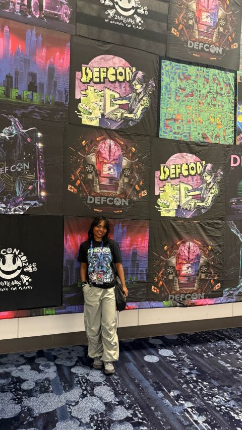

Penetration Tester · Application Security
Ilakkiya Vijayakumar
aka cybh3rlux
Penetration tester and application security engineer. I break things so players, customers, and companies don't get hurt.
Washington DC–Baltimore Area · Open to relocation: US, UK, Europe
About
I’ve always wanted to help people. That’s why I started out in medical school. It took me a while to admit it wasn’t my path, so I made a leap and enrolled in engineering without even knowing what coding meant. As a first-generation student, I had no roadmap. I learned by exploring, asking questions and breaking things until they made sense.
Somewhere along the way I found cybersecurity, and everything clicked. I realised I’d wanted to protect people all along, just in a different way. Instead of treating patients, I find the weaknesses before attackers do, and I help teams fix them before anyone gets hurt. Looking back, the signs were there since I was 10, sitting in front of my first computer and wondering how it all worked underneath.
Today I’m a penetration tester. I test web apps, APIs, mobile and networks, review code, respond to incidents on call, and train developers to build more securely. I also try to open the door for others the way I wish someone had for me.
The career changed. The calling never did.

what I'm best at
-
Web & API pentesting
Business logic, access control, and injection flaws that scanners miss.
-
Network & mobile pentesting
Internal (on-site) and external network tests in production, plus mobile platform testing.
-
Active Directory attacks
ADCS ESC1, Kerberoasting, DCSync, and credential reuse attack paths.
-
Secure code review & AppSec
Manual code review, 20–30 Snyk findings triaged a day, and secure coding training for developers.
-
Detection & response
Weekend zero-day on-call, evidence collection, SOC triage, and detection engineering.
-
AI security
Agentic systems built safely: prompt injection defense and LLM guardrails. Won SWARM Global 2026.
Explore
- ~/experienceExperiencePentesting at Aventiv and Aon, SOC at GWU, engineering at Oracle.
- ~/projectsProjectsException Guardian, my AD attack lab, and more.
- ~/achievementsAchievementsCTF wins, awards, and DEF CON 2026.
- ~/skillsSkills & certsTools, languages, certifications, and education.
- ~/communityCommunityTeaching and opening doors for women in security.
- ~/contactContact + CTFGet in touch, or try to capture my flag.